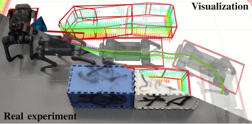
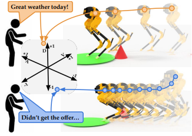
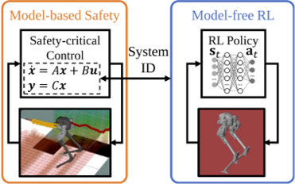
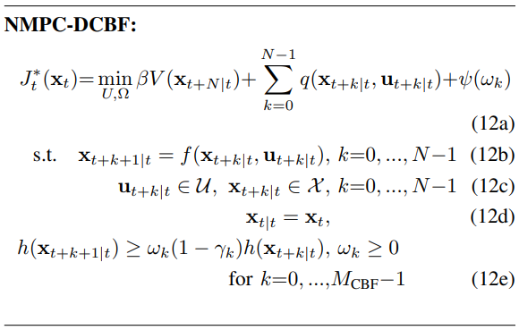
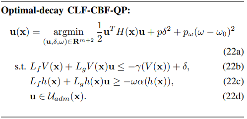
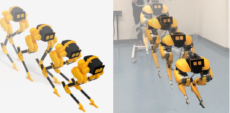

About Me
Hi there! I am Ph.D. student in Controls and Robotics at University of California, Berkeley, working with Prof. Koushil Sreenath.
Before that, I spent a wonderful year doing research with Prof. Ralph Hollis at Carnegie Mellon University.
I obtained my Bachelor of Engineering at Zhejiang University in 2019.
My goal is to create safe, intelligent, and agile legged robots for better human companions.
My current research is primarily centered on tackling the control and planning of legged robots
using a combination of model-based optimal control and model-free reinforcement learning.
I am also interested to expand the boundaries of legged robots beyond mere locomotion.
I am always happy to chat or collaborate with people with different backgrounds. If you are interested in my work, please feel free to reach out!
- Google Scholar: CLICK HERE
- Linkedin: CLICK HERE
- Twitter: CLICK HERE
- Email: CLICK HERE
Research Highlights
My work has enabled a bipedal robot Cassie to perform robust, agile, and aggressive maneuvers and to safely navigate autonomously in unknown and cluttered environments. I have also expanded the capacities of quadrupedal robots beyond locomotion, such as functioning as guide dogs, soccer ball shooters and goalkeepers, and collaborative agents.


Honors and Rewards
- William S. Floyd, Jr. Graduate Student Fellowship at UC Berkeley, 2022
- Best RoboCup Paper Finalist in IROS 2022
- Graduate Division Block Grant Award in Mechanical Engineering at UC Berkeley, 2021
- Best Service Robot Paper Finalist in ICRA 2021
- Best Best Entertainment and Amusement Paper Finalist in IROS 2020
- IROS Student and Developing Countries (SDC) Travel Award, 2019
- Best Undergraduate Thesis Award at Zhejiang University, 2019
Talks
Can We Bridge Model-based Control and Model-free RL on Legged Robots?→GRASP SFI, University of Pennsylvania, Sept. 2022→Mila – Quebec AI Institute, Sept. 2022 →Beijing Academy of Artificial Intelligence (BAAI), Nov. 2022 |
Publications
*Equal Contribution, †Project Lead
|  |
Walking in Narrow Spaces: Safety-critical Locomotion Control for Quadrupedal Robots with Duality-based Optimization
Q. Liao, Z. Li†, A. Thirugnanam, J. Zeng, and K. Sreenath Preprint, 2022 Paper / Video / Code A safety-critical legged locomotion controller to travel through narrow spaces. |
 |
Creating a Dynamic Quadrupedal Robotic Goalkeeper with Reinforcement Learning
X. Huang*, Z. Li*, Y. Xiang, Y. Ni, Y. Chi, Y. Li, L. Yang, X. B. Peng, K. Sreenath Preprint, 2022 Paper / Video / Media: IEEE Specturm • Tech Xplore • TechCrunch A agile quadrupedal goalkeeper that can intercept fast-moving ball. |
 |
GenLoco: Generalized Locomotion Controllers for Quadrupedal Robots
G. Feng*, H. Zhang*, Z. Li†, X. B. Peng†, B. Basireddy, L. Yue, Z. Song, L. Yang, Y. Liu, K. Sreenath, S. Levine Conference on Robot Learning (CoRL), 2022 Paper / Video / Code An opensourced generalized locomotion controller for a vast number of quadrupedal robots. |
 |
Collaborative Navigation and Manipulation of a Cable-towed Load by Multiple Quadrupedal Robots
C. Yang*, G. N. Sue*, Z. Li*, L. Yang, H. Shen, Y. Chi, A. Rai, J. Zeng, K. Sreenath IEEE Robotics and Automation Letters (RA-L), 2022 Paper / Video / Media: Video Friday A legged robot team that can tow a heavy load by cables. |
 |
Hierarchical Reinforcement Learning for Precise Soccer Shooting Skills using Quadrupedal Robots
Y. Ji*, Z. Li*, Y. Sun, X. B. Peng, S. Levine, G. Berseth, K. Sreenath International Conference on Intelligent Robots and Systems (IROS), 2022 Best RoboCup Paper Finalist, IROS 2022 Paper / Video / Media: Video Friday • Tech Xplore A quadrupedal robot that can precisely shoot a soft ball to the given target. |
 |
Adapting Rapid Motor Adaptation for Bipedal Robots
A. Kumar*, Z. Li*, J. Zeng, D. Pathak, K. Sreenath, J. Malik International Conference on Intelligent Robots and Systems (IROS), 2022 Paper / Video An adaptive bipedal locomotion controller by RL. |
|  |
Teaching Robots to Span the Space of Functional Expressive Motion
A. Sripathy, A. Bobu, Z. Li, K. Sreenath, D. S. Brown, A. D. Dragan International Conference on Intelligent Robots and Systems (IROS), 2022 Paper / Video Humans can teach robot how to behave with emotions! |
|  |
Bridging Model-based Safety and Model-free Reinforcement Learning through System Identification of Low Dimensional Linear Models
Z. Li, J. Zeng, A. Thirugnanam, K. Sreenath Robotics: Science and Systems (RSS), 2022 Paper / Video / Seminar A bipedal robot controlled by its RL policy is a linear system! |
 |
Bayesian Optimization Meets Hybrid Zero Dynamics: Safe Parameter Learning for Bipedal Locomotion Control
L. Yang*, Z. Li*, J. Zeng, K. Sreenath International Conference on Robotics and Automation (ICRA), 2022 Paper / Video Auto-tuning a HZD-based bipedal locomotion controller by Bayesian Optimization. |
 |
Vision-Aided Autonomous Navigation of Bipedal Robots in Height-Constrained Environments
Z. Li, J. Zeng, S. Chen and K. Sreenath Preprint, 2021 Paper / Video / Media: Video Friday A bipedal robot now can autonomously and safely navigate unknown and congested environments. |
 |
Autonomous navigation for quadrupedal robots with optimized jumping through constrained obstacles
S. Gilroy*, D. Lau*, L. Yang*, E. Izaguirre, K. Biermayer, A. Xiao, M. Sun, A. Agrawal, J. Zeng, Z. Li†, and K. Sreenath Conference on Automation Science and Engineering (CASE), 2021 Paper / Video / Media: Video Friday Quadrupedal robots can traverse more complex environments by leveraging a big jump. |
|  |
Enhancing Feasibility and Safety of Nonlinear Model Predictive Control with Discrete-Time Control Barrier Functions
J. Zeng*, Z. Li*, and K. Sreenath Conference on Decision and Control (CDC), 2021 Paper Incorporating Control Barrier Functions (CBFs) with Model Predictive Control (MPC). |
 |
Reinforcement Learning for Robust Parameterized Locomotion Control of Bipedal Robots
Z. Li, X. Cheng, X. Peng, P. Abbeel, S. Levine, G. Berseth and K. Sreenath International Conference on Robotics and Automation (ICRA), 2021 Paper / Video / Seminar / Media: MIT Technology Review • Tech Xplore • Inverse • MathWorks • heise (German) • DeepTech (Chinese) A bipedal robot learns to walk, turn, and squat, with significant robustness. |
 |
Robotic Guide Dog: Leading a Human with Leash-Guided Hybrid Physical Interaction
A. Xiao*, W. Tong*, L. Yang*, J. Zeng, Z. Li†, and K. Sreenath International Conference on Robotics and Automation (ICRA), 2021 Best Service Robot Paper Finalist, ICRA 2021 Paper / Video / Seminar / Media: New Scientist • Daily Mail • Tech Xplore • Daily Californian • Independent • Futurism • China Daily • DeepTech (Chinese) Quadrupedal robots can servers as guide dogs! |
|  |
Safety-Critical Control with Optimal-decay Control Barrier Functions with Guaranteed Point-wise Feasibility
J. Zeng, B. Zhang, Z. Li, and K. Sreenath American Control Conference (ACC), 2021 Paper How can we ensure feasibility using Control Barrier Functions (CBFs) with bounded inputs? |
|  |
Animated Cassie: A Dynamic Relatable Robotic Character
Z. Li, C. Cummings and K. Sreenath International Conference on Intelligent Robots and Systems (IROS), 2020 Best Entertainment and Amusement Paper Finalist, IROS 2020 Paper / Video / Seminar / Media: Video Friday A bipedal robot can behave emotively to be a better human companion! |
Teaching
| UC Berkeley | [DEWA]: Optimization & Machine Learning with Applications to Energy Systems | Graudate Level | Class Size:~30 | 2020-2023 |
| UC Berkeley | [E7]: Introduction to Computer Programming for Scientists and Engineers | Undergraudate Level | Class Size:~200 | Fall 2020 |
| Zhejiang University | Voluntary teacher in an underrepresented primary school | K-12 | Class Size:~160 | Part time in 2014-2015 |
Academia Community Services
- Journal Reviewer: RA-L (2021-2023), TPAMI (2022), TCDS (2022), Frontiers in Neurorobotics (2022).
- Conference Reviewer: ICRA (2021-2023), IROS (2021-2022), Humanoids (2022), CASE (2021).